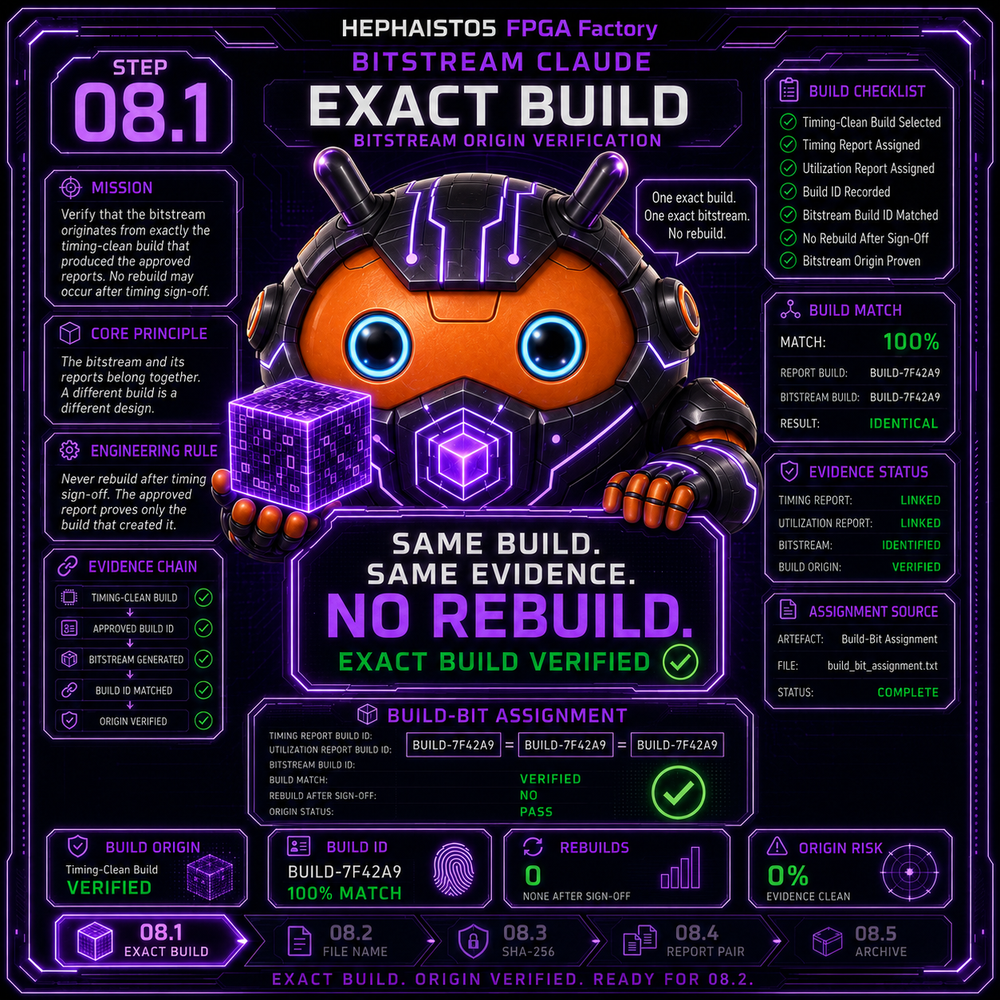
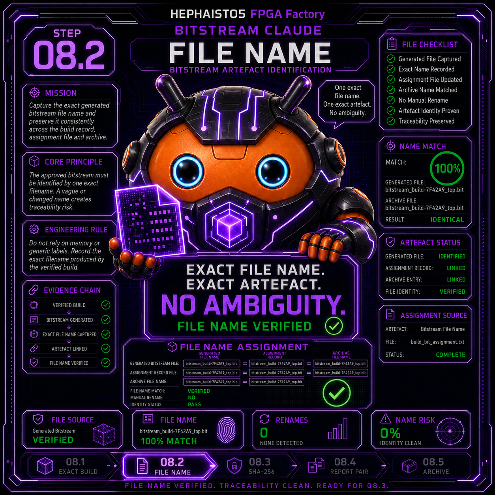
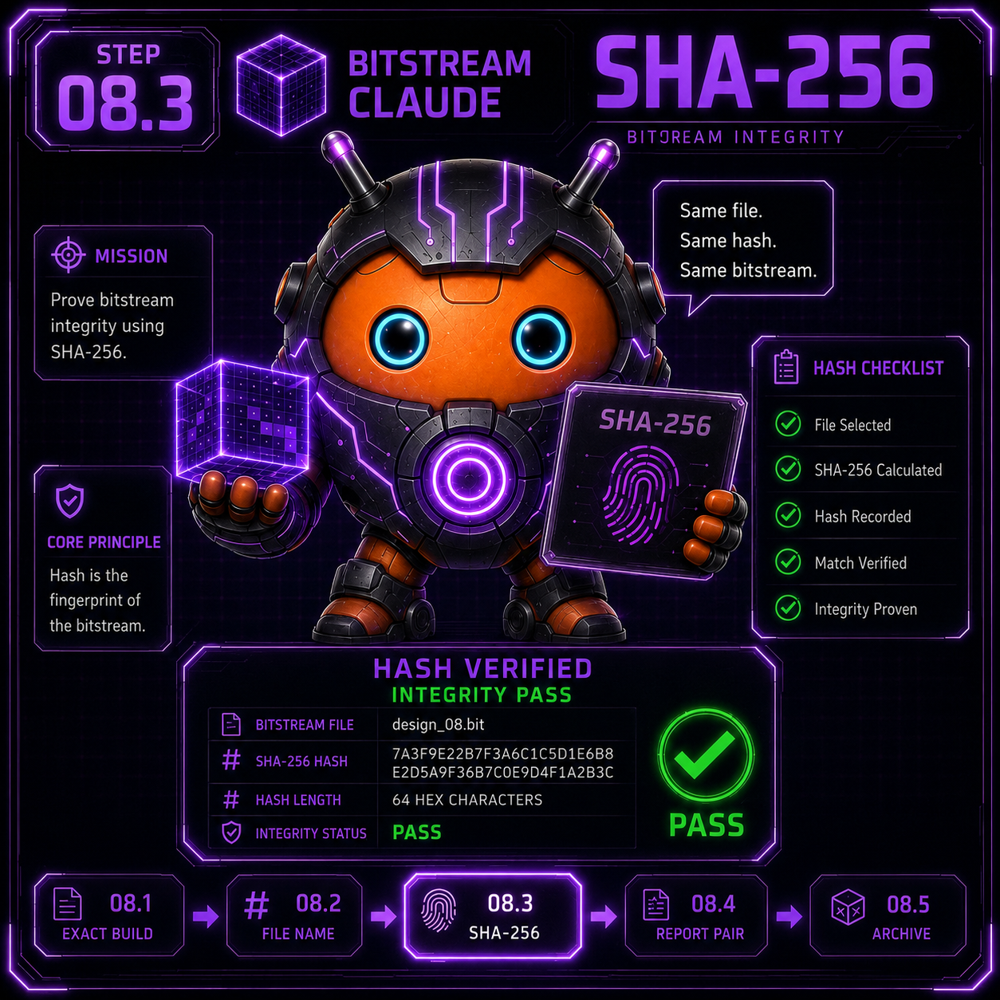
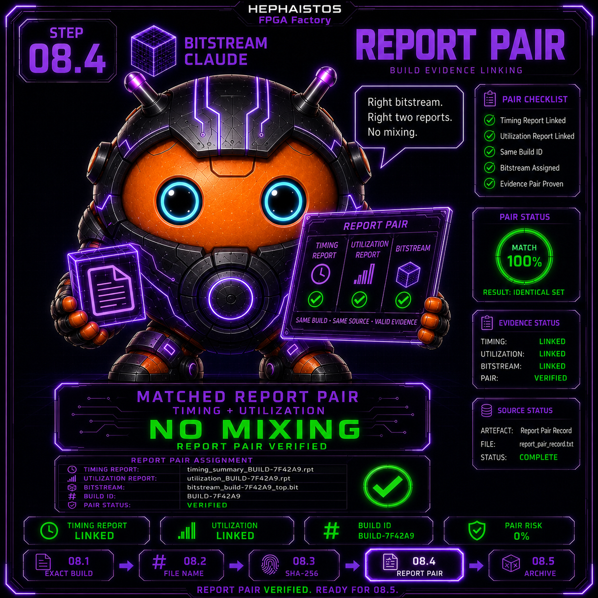
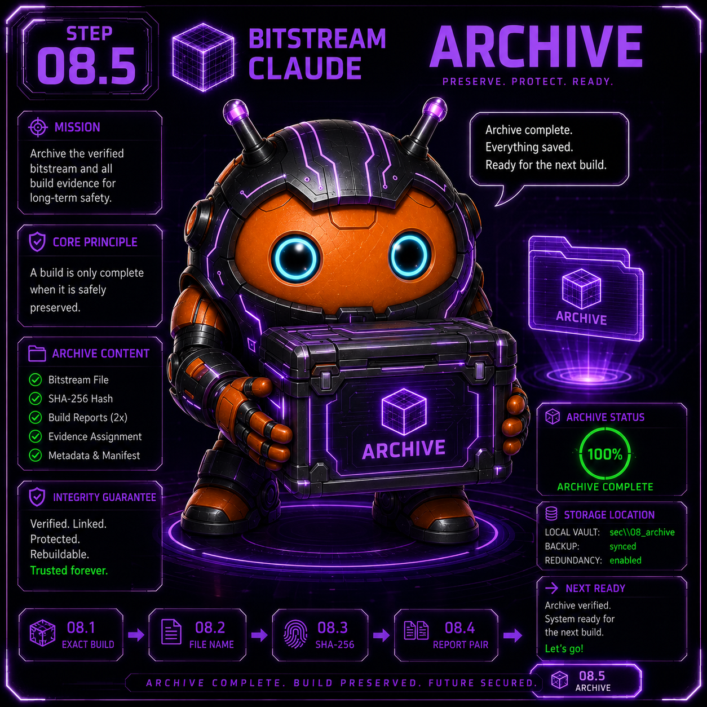

08 Bitstream
Unterschritte 8.1 - 8.5
← Zurueck zur Uebersicht

8.1 Bitstream aus GENAU dem timing-grünen Build
Prüfaufgabe
Bitstream aus GENAU dem timing-grünen Build
Beweis-Artefakt
Build-Bit-Zuordnung
Ein „schnell nochmal neu gebaut“ zwischen Report und Bit ist ein ANDERES Design mit fremdem Report.

8.2 Sprechender Name mit Datum (nie top.bit)
Prüfaufgabe
Sprechender Name mit Datum (nie top.bit)
Beweis-Artefakt
Dateiname
top.bit und final_v2_neu.bit sind Amnesie mit Ansage. Name = Block + Variante + Datum — Menschen müssen ihn finden können.

8.3 SHA-256 versiegelt (Custody)
Prüfaufgabe
SHA-256 versiegelt (Custody)
Beweis-Artefakt
Hash im HANDOVER
Ein Bitstream ohne Hash ist ein Gerücht. Mit Hash wird „ist das wirklich der geflashte Stand?“ eine Rechenfrage statt einer Erinnerungsfrage.

8.4 Report-Paar dokumentiert (Bit ↔ Timing/Util)
Prüfaufgabe
Report-Paar dokumentiert (Bit ↔ Timing/Util)
Beweis-Artefakt
Zuordnungszeile
Bit und Report sind ein Paar — getrennt zitiert sind beide wertlos. Die Zuordnungszeile kostet 10 Sekunden und rettet Wochen.

8.5 Alte Bitstreams unangetastet archiviert
Prüfaufgabe
Alte Bitstreams unangetastet archiviert
Beweis-Artefakt
Archiv-Ordner
Auch ein überholter Bitstream ist Beweis für „was lief damals“. Nichts löschen — Speicher ist billiger als Zweifel.